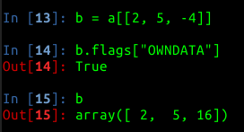
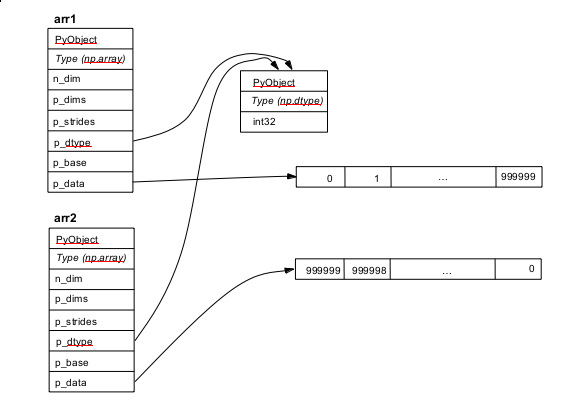
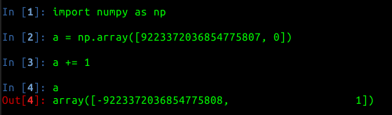

Python for Data Science
Axial HQ
23 July 2013
Personal Background
- Studied computer science and statistics at Columbia
- Worked on the server team at foursquare (Explore recommendation engine)
- Previously on the OkCupid data team (conducted research for OkTrends reports)
- Most recently, Hacker-in-Residence at Quotidian Ventures
- hackNY fellow 2011
Some common data science tools
- Python
- R
- MATLAB
- Stata
- SAS
- Julia
- Go
Chances are, you'll end up having to use more than one of these
Python is great for data science!
- High-level language
- Munging made easy
- Full-featured standard library
- Highly comprehensive third-party libs for data science
Python can be problematic for data science
- The GIL poses, at best, an extra hoop to jump through
- Slow (compared to C/C++/Java)
- Academics often prefer R (stats), MATLAB (science), or STATA (quant. social sciences)
Some problems can be avoided by avoiding pure python
Why not pure python?
- Slow
- Non-standard language for some academics
- Most third-party libs aim to solve one or both of these problems
(PyPy may also help in the future, but its use in data science is currently experimental)
The big question: python2 or python3?
Scientists (particularly academics) tend to be the slowest to change any technology
- 6-12 months ago: Definitely python2
- 6 months from now: probably python3
- Right now - tossup (try python3)
- Most major libraries have now been ported
Tools from the Python Standard Library
Iterating with Itertools
- Provides a number of utilities (not just useful for data science)
- Faster than using custom Python code, but still slow
Array
- Just kidding - never use this!
Bridging the Gap
SciPy (e.g. NumPy)
- A set of free software packages for scientific computation tasks
- If you need it, it's in SciPy!
- NumPy provides support for arrays and matrices of arbitrary dimensions
- SciPy provides the basics of scientific computation
- Matplotlib provides MATLAB-esque graphing and plotting
- Pandas provides manipulation of data structures
- scikit-learn provides machine learning in python
- Also available: symbolic mathematics (SymPy), interactive console (IPython), image processing (scikit-image), and more
IPython
- Optional for Python work; all but essential for data science
- IPython Notebook, in their own words:
"The IPython Notebook is a web-based interactive computational environment where you can
combine code execution, text, mathematics, plots and rich media into a single document"
- Allows easy profiling, debugging, sharing, and more
NumPy
- Basic arrays and matrices in arbitrary dimensions
- Enough goodies here for a talk on their own
- NumPy arrays are implemented in C, and laid out in memory in C-idiomatic form
- Very interoperable with native Python functions
- Can usually be passed in where a Python list is expected, etc.
Working with arrays
If you're used to MATLAB, do not use matrices (http://wiki.scipy.org/NumPy_for_Matlab_Users)
Why use np.array
NumPy gives you speed
NumPy gives you flexibility: eg. indexing

NumPy gives you flexibility: eg. reshaping
The above is instantaneous!
NumPy Flags
Don't Fear the C
- Thinking (just a bit!) about memory will save much time & headache
Python memory layout
NumPy memory layout

NumPy Caveats
Always use binary installation if possible
- If compiling from scratch, use GNU tools or stock up on Tylenol
- This applies to the entire SciPy toolchain
No free lunch - you're in C-land now!
Kiss goodbye to that!

NumPy costs you memory
- The above operation will create three temporary values
Pandas
- Mitigates some of the need for RPy (allows a similar interface for manipulating data)
Pandas' data frames are very similar to R's data frames
RPy
- Interface with R without leaving the comfort of Python
- Many statistical libraries are implemented first in R, the language of choice for most academic statisticians
- R also allows a flexible interface for manipulating data as 'data frames', which can be convenient
High-level: Scraping, processing, and analysis
Scraping: beautifulsoup/lxml
- beautifulsoup and lxml are both tools for "parsing" XML/HTML
- beautifulsoup is not a true parser
- lxml wraps both libxml and libxslt and is usually faster
- beautifulsoup has better support for encoding detection
- lxml provides an interface to beautifulsoup, so you can switch between the two
- lxml can use beautifulsoup as a fallback
Processing: NLTK
- NLTK is the go-to library for NLP (natural-language processing) work
- Very full-featured
- Provides sample corpora, tokenizing, parse trees, as well as advanced functionality
- Very easy to use
- Be careful of runtime complexity
MapReduce
- Could spend an entire talk about the MapReduce paradigm
- Python is a very convenient language for using with Hadoop
- Amazon EMR (Elastic MapReduce) even uses Python for their demo
Analysis: SciKit-learn
- Provides fundamental machine learning utilities
- Supervised/unsupervised learning, model selection and evaluation, etc.
- Can also do some preprocessing, though not the focus of scikit-learn
Graphing: Matplotlib
- Not the only (or necessarily best) graphing library for Python
- Compatible with the rest of SciPy, great for 'polished WIP'
- Highly customizable
Matplotlib example
Futher Resources
Navigating the Postmodern Python World
Python for Data Analysis (O'Reilly)